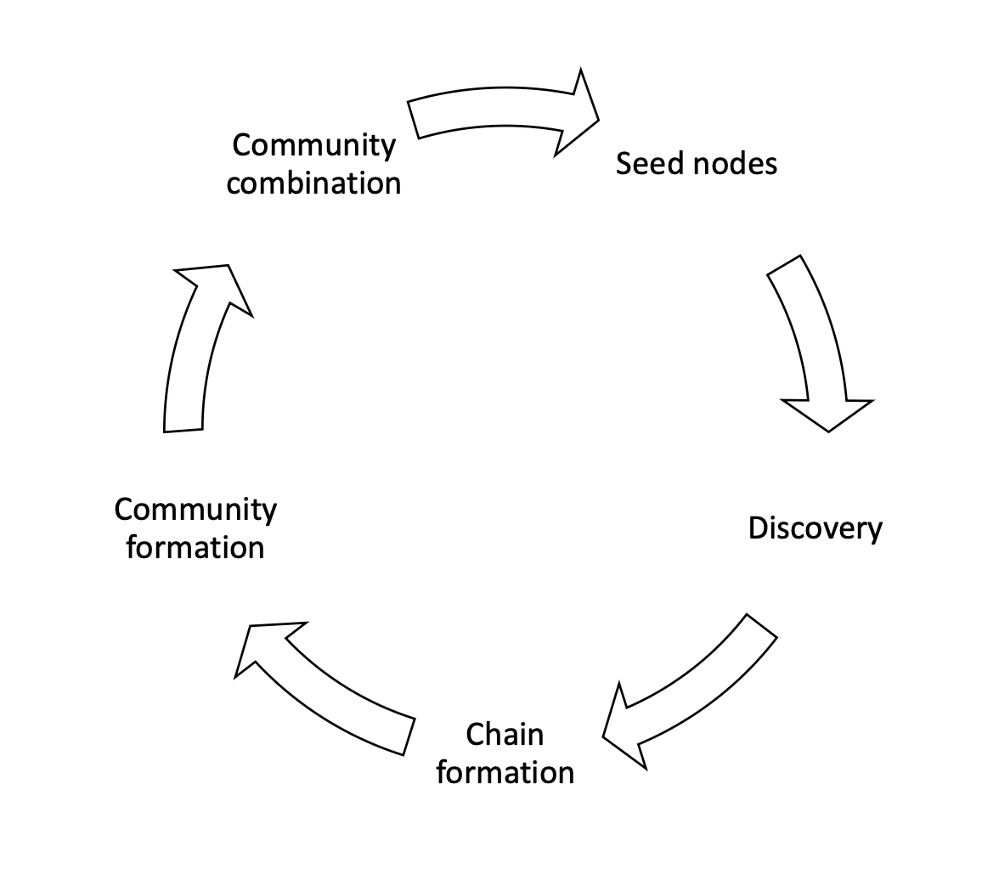
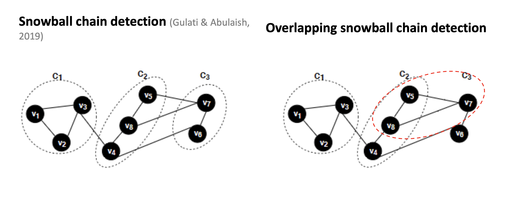
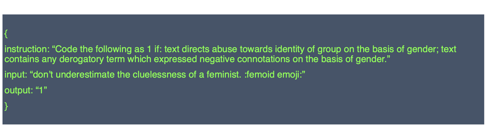

class: center, middle # Welcome! ## Basics of Web Scraping and LLMs: ### A Workshop at the University of New Mexico, Sept. 5 2025 Workshop site: https://henryhenryhenry.com/unm_workshop_2025/ Colin Henry, PhD Postdoctoral Research, University of Zurich **Research focus:** online political movements, extremism, and digital communities --- class: center, middle # Conceptual Introduction ## Collecting Data from the Internet for Political Science **Workshop Flow** 1) Concepts & Ethics 2) Web scraping 3) LLMs for basic text analysis 4) Bluesky API? .footnote[Use ← → or space to navigate. Press **P** to open presenter notes.] ??? Welcome everyone. The internet is a massive archive of political communication. We'll cover conceptual issues first, then hands-on work: scraping, APIs, and LLM-based analysis. --- # Why Collect Internet Data? - Politics, mobilization, and discourse increasingly occur online - We study: - Social media discourse - News coverage - Government/open data portals - Internet as a **“digital archive of politics in real time.”** ??? Modern politics lives online. We can observe campaigns, policy debates, and grassroots activism as they unfold. But we must ask who is represented online and which voices are missing. --- # Examples from Political Science - **Campaigns**: framing and issue emphasis in candidate posts - **Public opinion**: Reddit/forums to track narrative shifts - **Institutions**: bill histories via legislative sites - **Comparative**: censorship or media diversity across regimes ??? Campaigns: scrape or use APIs to analyze framing. Public opinion: capture sentiment and topics on forums. Institutions: assemble sponsorship patterns. Comparative: track censorship or media changes. --- # Data Availability Spectrum - **Structured**: APIs, official datasets, open data portals - **Semi-structured**: HTML pages, tables, feeds - **Unstructured**: raw text, images, video - Many projects start with semi/unstructured and **structure it** for analysis ??? Imagine a spectrum: ready-made datasets vs. messy HTML/text. Much of our work is converting messy or semi-structured sources into tidy data frames suitable for analysis. --- # Two Primary Access Paths ## 1) Web Scraping - Automated collection of HTML content - Useful when structured access is unavailable ## 2) APIs - Structured, query-based access - Typically easier and cleaner, but provider-controlled ??? Scraping mimics a human browsing the web and extracting content. APIs are more stable but depend on platform policies and business models. Often you’ll combine both approaches. --- # Conceptual Trade-offs **APIs** - ✅ Reliable, structured, predictable - ❌ Restricted access; subject to shutdown or policy changes **Scraping** - ✅ Flexible; accesses non-API content - ❌ Fragile; higher ethical/legal risk ??? APIs and scraping are complements. APIs can disappear or narrow. Scraping breaks when markup changes and raises ethical questions. Choose based on availability, stability, and ethics. --- # Ethical Considerations - Accessible ≠ Ethical - Key concerns: - **Consent**: user expectations about study/use - **Harm**: risks to vulnerable groups - **Fair use**: server burden, ToS compliance ??? Publicly visible content may still be sensitive. Ask: do users expect analysis? Could publication cause harm? Are we overloading servers or violating terms? --- # Legal Frameworks (U.S.) - **CFAA**: Computer Fraud and Abuse Act (historical basis for suits) - *hiQ v. LinkedIn*: scraping publicly accessible data not a CFAA violation - Always check: - Site **Terms of Service** - **robots.txt** (crawling signals) - Institutional **IRB** ??? Courts have clarified some boundaries, but platforms still use ToS and technical controls. Respect robots.txt signals and consult your IRB for human-subjects implications. --- # The Role of IRBs - Public ≠ exempt from review - Key issues: - Identifiability (usernames/handles) - Potential harms to marginalized groups - Best practice: **minimize** and **anonymize** ??? Even with public data, IRBs may require review. Limit collection to what you need, anonymize when feasible, and justify your data access plan. --- # Transparency & Reproducibility - Document collection: code, timestamps, endpoints/queries - Share **replication code**, not necessarily raw data - Balance open science with privacy protection ??? Prefer sharing scripts and exact instructions to regenerate data (if ethically permissible). Avoid redistributing sensitive raw data when it risks privacy. --- # Ethics in Practice — Case Studies - **Cambridge Analytica**: misuse of Facebook data and consent - **ProPublica**: scraping ad libraries to enhance transparency - **Censorship studies**: monitoring authoritarian controls ??? Contrast harmful data misuse (Cambridge Analytica) with accountability uses (ProPublica). Context, intent, and safeguards matter. Discuss where your project sits on this spectrum. --- # The Data Lifecycle 1) Research question 2) Identify sources 3) Evaluate constraints (ethics/legal) 4) Collect (scrape/API) 5) Clean & structure 6) Analyze 7) Share responsibly ??? Treat data access as part of a lifecycle. Ethics recur at every step. Keep logs and versions so others (and future you) can reproduce the pipeline. --- # Beyond Access — Core Challenges - **Representativeness**: who is (not) online/on-platform? - **Manipulation/Bots**: coordinated inauthentic activity - **Platform bias**: APIs shape visibility/availability - **Dynamics**: deletions/edits; need snapshots & archiving ??? Measurement validity is key: who speaks, who is silent, and what systematic biases platforms introduce. Data changes—consider time-stamping and archiving strategies. --- class: center, middle # Interlude for breakout discussion --- class: center, middle # Discussion Activity ## Applying Web Data Concepts to Your Research .footnote[Break into pairs/groups, ~5–7 minutes per prompt.] ??? We’ll now connect conceptual ideas to your own research projects. Discuss in pairs or small groups; the goal is to surface practical applications and dilemmas. --- # Prompt 1: Public vs. Private Data - Imagine studying an online political community (e.g., activists, party members, diaspora groups). - Which platforms would you scrape or query via API? - Treat posts as **public speech** or **private communication**? - How would this affect ethical/legal choices? ??? Push students to think about expectations of privacy. Twitter may feel public, but WhatsApp or Discord are closer to private spaces. Their answers will depend on norms and project goals. --- # Prompt 2: Representativeness & Bias - Collecting data from Twitter/X or Reddit… - Who is **overrepresented** in your sample? - Who might be **missing**? - How could these biases shape findings? - What strategies could address them? ??? Encourage critical thinking: younger, more urban, tech-savvy populations dominate some platforms. Strategies: triangulate sources, weight data, or clearly scope limits in write-up. --- # Prompt 3: Transparency & Replication - You scrape a government website for legislative data. - What parts of the process should be shared for replication? - What risks prevent sharing raw data? - How to balance **open science** and **responsibility**? ??? Students should weigh transparency with ethical limits. Code, scraping scripts, and documentation are safer to share than identifiable raw datasets. Discuss replication packages in political science. --- # ✅ Goal By the end of discussion: - Connect scraping & APIs to your **own projects** - Identify **ethical and methodological dilemmas** - Practice framing your choices for transparency & rigor ??? Wrap-up: the point is to bridge concepts with their research interests, ensuring takeaways feel personally relevant. --- class: center, middle # Interlude: A break and then research applications and hands-on training --- # Research Question - Why do some online communities show **greater extremism** than others? - Core idea: **Competition for attention** → incentives for **extreme content** ??? Set up the puzzle: attention is scarce; communities may escalate rhetoric to capture it. This frames all methods as steps to measure communities, attention, and extremism reliably. --- # Data Collection Across Platforms - **Targets**: Twitter/X, Reddit, YouTube, TikTok - **Methods**: - Web scraping (HTML extraction where APIs are limited) - **APIs** for structured access where available - **Snowball sampling** to expand from seeds to communities ??? Explain the hybrid approach: mix scraping and APIs to mitigate platform constraints. Note ethics: ToS, robots.txt, IRB, and rate limits. Emphasize logging queries and timestamps for replication. ---  --- # Community Detection (Snowball Chains) - Start with **seed nodes** → discover neighbors → form chains → merge into communities - Use **overlapping snowball chain detection** for network-aware grouping - Output: community graphs + metadata (nodes, edges, overlap) ??? Walk through the pipeline visually. Emphasize that communities emerge from connectivity patterns, not just hashtags. Mention that overlap captures cross-community exposure/competition. ---  --- # Text Classification with LLMs - Collect **user-generated text** per community - **Transformers** (e.g., LLaMA family) for abuse/extremism coding - Instruction-tuned classification to flag: - Overall extremist content - In-group vs. out-group targeting ??? Bridge to today’s LLM notebook: they’ll see prompts/JSON output and a basic sentiment example. Note validation via held-out or external datasets; emphasize transparency of labeling criteria. ---  --- # What This Enables - Map **competition**: number of communities, overlap ratios (IVs) - Measure **extremism**: levels & targets (in-/out-group) (DVs) - Test **theory**: Does competition predict extremism? Do platform rules moderate the effect? (regular ol' regression) ??? Keep results at a high level; save details for a separate talk. The goal is to show that the pipeline leads to testable implications and interpretable findings. --- # Key Takeaways - **Scraping + APIs + Snowball + LLMs** = end-to-end pipeline - Same building blocks you’ll practice today - Balance **rigor** (replication, documentation) with **responsibility** (ethics, privacy) ??? Close by connecting back to the agenda. Invite students to map these steps onto their own projects and note where today’s hands-on sections fit into that pipeline. --- # Preparing for Hands-On - Practice on safe targets: - **bookstoscrape.com** for scraping - Then: basic text analysis with **LLMs** - Maybe: **Bluesky AT Protocol** for API data ??? We’ll learn transferable patterns in a controlled environment, then apply them to live social data with clear rules, and finish with an LLM walkthrough. --- class: center, middle # Transition ## Next: Return to workshop web page and open first Google Colab notebook ??? We’ll shift into a notebook and start with HTML structure, selection, and extraction patterns on scrapethissite.com.